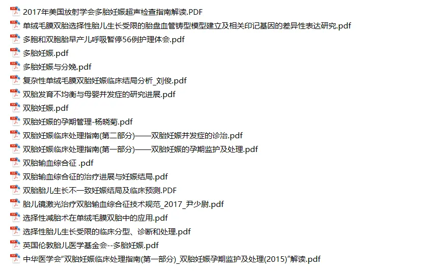
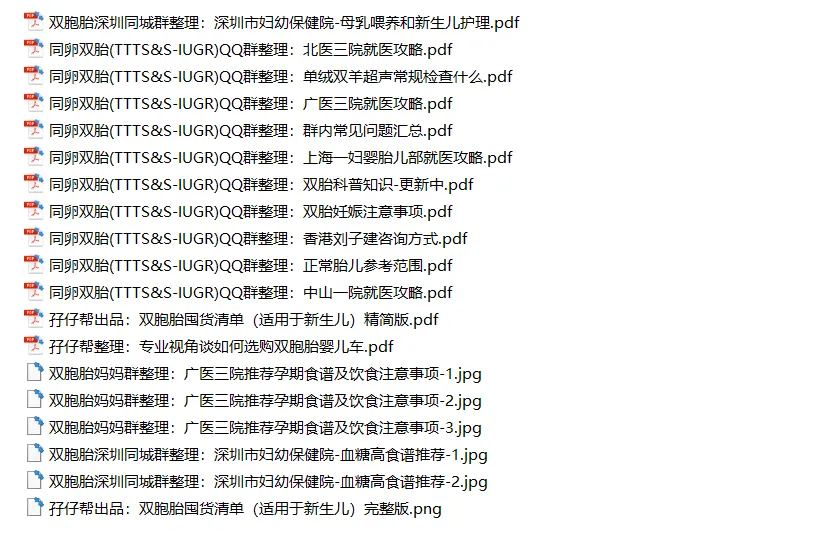
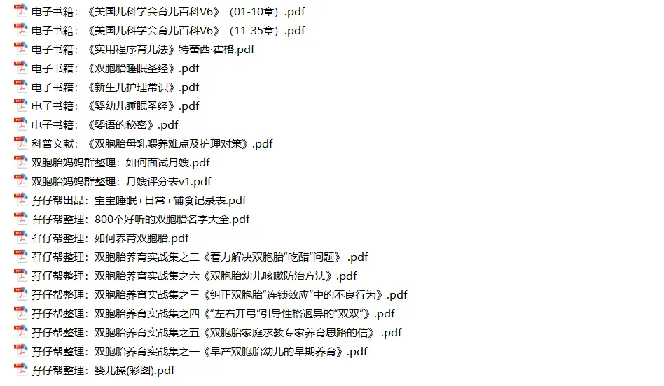
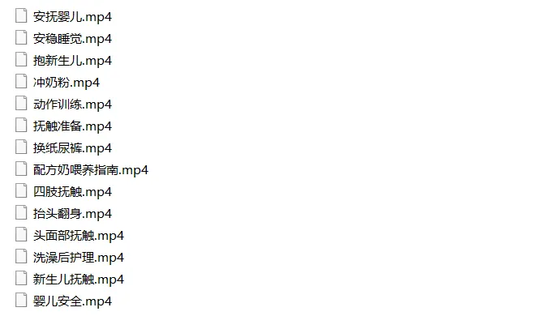
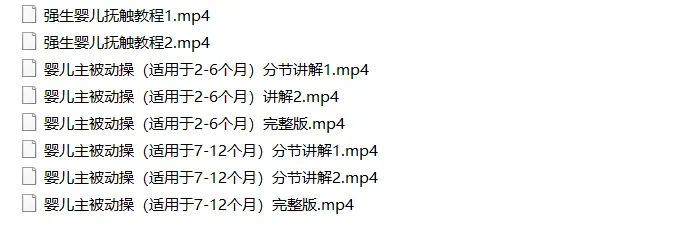
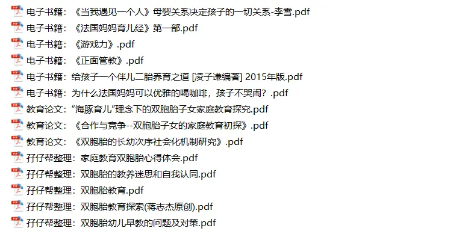

关注我们，全面了解双胞胎育儿知识
文|圆圈妈
网图|侵删
经常有宝爸宝妈抱怨，
为何?
针对双胞胎的育儿知识那么少
我想，你实际是想问：
【如何养育双胞胎】
养育双胞胎的不二法宝就是
多了解多接触多参考多交流
2020年的第一天，
孖仔帮给小伙伴们
送上这份新年大礼包
双胞胎育儿干货集锦
感谢这一年来，
小伙伴们对孖仔帮微信公众号
和双胞胎圆圈妈妈的关注和支持。
在过去的2019年，
孖仔帮收获到
来自双胞胎爸爸群妈妈群
一波接一波的报喜，
有幸见证了一对对双胞胎宝宝们
平安顺利来到爸爸妈妈身边的幸福时刻。
感谢我们的双胞胎大家庭
有你们在，
每一天都不孤单
2020年，新的一年，
我们继续携手，
快乐育儿，幸福生活！
祝愿怀上双胎的孕妈孕爸们，
都能顺顺利利
喜获足月足斤足两的双胞胎宝宝！
已生双胎的辣妈奶爸们，
都能开开心心
陪伴双胞胎宝宝们健康成长！
双胞胎育儿干货集锦共4个部分：
第一：双胞胎科普
第二：双胞胎孕育
第三：双胞胎养育
第四：双胞胎教育
第一：双胞胎科普
文档来自于学术期刊论文，可从中了解到双胞胎妊娠的注意事项和产检提示。
双胎妊娠要在战略上藐视敌人，战术上重视敌人，多一些知识储备，知己知彼，方能百战不殆。
为了减少不必要的惊吓和过度的恐慌，正确做法是：少问度娘，多看科普，虽然文献内容有点干巴巴的，晦涩难懂，这是发生在自己身上的事情，万不可稀里糊涂，拿出备战高考的心态来面对吧。若以上文档都不是你想了解的菜，可自行去仿知网下载。
请相信，以上科普文章若用心读完，你一定不会再恐惧每次的产检，一定会更加有信心有底气迎接双胞胎宝宝们的到来！
第二：双胞胎孕育
包含饮食，睡眠，产检等经验知识分享，以及给双胞胎宝宝的用品囤货总结。
没有建群建号之前，我入了一个同卵双胎QQ群，群内有医生在线指导，群主总结了许多双胎妊娠的注意事项，包括产检，就医方向，孕期常见问题答疑等，值得参考借鉴。倘若我当年在孕期就加入到双胞胎群组，有过来人的经验提醒，估计也能熬到足月分娩。
再者还有孖仔帮双胞胎微信社群内宝爸宝妈们的热心分享，有他们去孕妇学校的听课课件，还有他们产检时的经历分享。
双胞胎宝宝的用品囤货攻略，我写了两篇，简易版是2018年写的，完整版是2019年写的，适用于第一胎来了双胞胎，懵逼到一塌糊涂的新手父母参考借鉴。
双胞胎婴儿车怎么选，这个老大难问题经常被问起，在网上看了篇专业视角写的文章，downlow下来给大家参考，也有我个人经验写的文章，拉到文末看【双胎囤货】系列的推文可查看到相应文章。
第三类：双胞胎养育
包含喂奶，宝宝睡眠经验分享，双胞胎养育实战攻略。
以下视频尤其推荐给新手父母，这是国外育儿网站宝宝中心babycenter出品的，不知为何，中文版网站被封了，只有英文网站。这是我在孕期就downlow的视频（带中文字幕），没有冗长的理论和废话，只有满满的干货和实打实的操作，对我的帮助很大，比国内的某树某学园某妈强多了。
群里经常有妈妈们问如何给早产儿宝宝做智护训练，现在把分解版和完整版整理出来了，非常简单易学，就看你坚不坚持咯！
在年初考育婴师证的培训课上，培训老师也格外强调了给婴幼儿做被动操的积极意义和重要性，而我自己也感觉，不知道是不是给圆圆做被动操做得多的缘故，他的大动作发展得明显比圈圈好，现在体能方面也比圈圈强。
【双胞胎养育实战系列】是在网上收集整理的，多参考，多借鉴，必定可以摸索出一套适合自己和两宝宝的养育之道！
育儿类书籍有太多了，我时常觉得育儿书看多了会乱，少看了会慌。我们不需要全部看，也没有必要，而且时间也不允许。建议就是根据各自的家庭所需和个人的知识背景，选择性阅读，有所保留地参考借鉴。
第四类：双胞胎教育
包含亲子阅读，早教，双胞胎家庭的非常教育...
经常被问起有没有专门写给双胞胎家庭看的育儿书籍，其实为何一定要找这样的书呢？
我刚开始也很迷茫这两货该怎么养，怎么教，完全没有头绪，既没有老师教也没有书可以参考，经历过一阵摸滚带爬之后发现，也不过如此！
养育之道，不管是单胎还是双胎，其实本质是一样的！只不过因双胞胎的特殊性，我们父母需多做点额外功课罢了！
值得欣慰的是，已经有许多学者在做这方面的教育探究了，我在网上找到些资料，目前也在钻研中，希望能摸索出一些养育双胞胎心得发布在公众号上，与众多双胞胎家庭共勉。
电子档资料及视频领取方式：
1、长按识别二维码
2、关注公众号：孖仔帮
3、在公众号后台回复“2020”即可免费获取
注意：不是在文下留言，是直接给公众号发送消息，文章留言是没有自动回复功能的哦！
最后，把之前的推文做了汇总分类，方便寻找，建议收藏起来慢慢看哈！
1/双胎科普
为什么有些同卵双胞胎越看越不像了
产科权威科普：双胞胎输血综合症
曝光：我们对双胞胎的那些误解，你中招了吗
双胎科普||双胞胎胎儿在子宫内的发育过程图
同卵双胞胎的天敌--双胞胎输血综合征
官宣：双绒双羊，单绒双羊，单绒单羊傻傻分不清？一篇消除你所有疑问
网上流传的肚形看男女适合双胞胎孕妈咪吗？
双胞胎不好惹，这30个愚蠢问题，你还敢问吗？
不好意思，双胞胎的心灵感应，你真的误会了
我是双绒双羊，居然是同卵双胞胎…
2/双胎孕育
双胞胎与唐氏筛查---美丽的邂逅
双胞胎与糖筛----一场明争暗斗的较量
嘘！双胞胎妈妈孕期的尴尬事：做春梦
你吃不吃？长胎不长肉的8种食物，双胎孕妈必备
开什么玩笑！宫颈管过短要住院保胎
拿什么拯救双胞胎妈妈的“孕酮低”
孕期上班？双胎妈妈不可忽略的【四个注意两个不要】
双胞胎与孕期微量元素---对你爱爱爱不完
双胞胎与孕期体重----想说爱你不容易
吐槽||双胞胎妈妈孕期最尴尬的囧事之一：便秘
经验分享|双胞胎妈妈如何顺利度过早孕期
原来双胎妈妈可以这样数胎动，好简单啊
双胞胎准爸爸的生存指南：不做猪一样的队友，活着出来喜当爹
双胞胎准妈妈，其实你的产检方式一直搞错了…
我总结了产检建档经验，让双胞胎准妈妈少进些坑
缓解双胎妈妈的孕吐方法，有且只有以下3种
“试管双胎”，你不知道的事情发生了….
刚生完宝宝，经验之谈如何在深圳申请计划生育证明
1人吃3人补？活该你产后瘦不下来
不吓你！怀上双胞胎不想早产，孕期运动要注意这5点
1人吃，3人补 | 双胞胎妈妈正确养胎7大法
10个孕妇7个中招，孕期痔疮发作，离我远一点
怀上双胞胎补充DHA，需要乘以2吗？
5年医药研究经验的双胎奶爸与DHA的一场较量...
一碗毒鸡汤，双胞胎准妈妈专享，记得喝
看我如何巧妙套出双胞胎宝宝的性别！B超医生都认怂了
别再“套”了！这8个问胎儿性别的套路已经过时了！
双胞胎输血综合征：对不起妈妈，我偷喝了哥哥的羊水
孖仔帮·双胎孕期答疑第1期|双胎产检和单胎产检有什么区别
孖仔帮·双胎孕期答疑第2期|B超提示胎盘低置怎么办？
孖仔帮·双胎孕期答疑第3期 早孕期孕酮低怎么办
孖仔帮·双胎孕期答疑第4期|双胞胎妈妈拍孕妇照的最佳时间
孖仔帮·双胎孕期答疑第5期| 孕期妊娠纹那点破事儿
孖仔帮·双胎孕期答疑第6期|第一次产检发现异常怎么办
孖仔帮·双胎孕期答疑第7期|阴道内塞栓剂与清洁度3级
孖仔帮·双胎孕期答疑第8期|唐筛VS无创VS羊穿
孖仔帮·双胎孕期答疑第9期|禁忌食物能吃吗
3/双胎养育
双胞胎洗澡应该何时分开？这些信号告诉你
喂养干货||如何训练双胞胎宝宝睡整夜觉
想要做一个四海八荒的双胎妈妈，你需要这些工具
家有双胞胎宝宝，这6个小贴士越早知道越好
双胞胎宝宝怎么睡？这样做既省钱又安全
真人示范！双胞胎妈妈高难度喂母乳技巧
双胞胎的“心灵感应”---同时生病
双胞胎哥俩亲历疱疹性咽颊炎，附护理经验
如何顺利度过双胞胎宝宝的第一年
双胞胎新手爸爸的生存指南：做牛做马容易，做双胞胎爸爸难！难！难…
养育双胞胎宝宝的第一年，这4个小贴士越早知道越好
为出生就进NICU的双胞胎新生儿，我必须告诉你这5个通关秘籍
365天的魔怔后…证实我的双胞胎早产儿不是脑瘫!
第一次带双胞胎宝宝打预防针，我都做错了什么
绝了！双胞胎宝宝共享婴儿床的8种销魂睡姿
细说双胞胎母乳喂养3大法宝
家有双胞胎睡渣？听听国外育儿专家的5大绝招
双胎妈妈，为什么我不建议你这样坐月子...
双胞胎纯配方奶喂养：这辈子最甜蜜的内伤
躺着中枪的双胞胎育儿神器：iPad
深圳，双胞胎宝宝满月酒1500元一桌，我后悔了
4年前，儿保医生说我的双胞胎可能会长短脚…
养育双胞胎|今天，你记了吗？
DIY双胞胎宝宝百天照，你可以在家这样拍
双胞胎家庭的救命稻草：《双胞胎睡眠圣经》
《双胞胎睡眠圣经》解读01：双胞胎宝宝的睡训，何时开始为宜？
《双胞胎睡眠圣经》解读02：初月龄的双胞胎睡眠特点（上）
《双胞胎睡眠圣经》解读03：初月龄的双胞胎睡眠特点（下）
《双胞胎睡眠圣经》解读04：2月龄的双胞胎睡眠特点
《双胞胎睡眠圣经》解读05：3月龄的双胞胎睡眠特点
《双胞胎睡眠圣经》解读06：4月龄的双胞胎睡眠特点
《双胞胎睡眠圣经》解读07：5月龄的双胞胎睡眠特点
《双胞胎睡眠圣经》解读08：6–9月龄的双胞胎睡眠特点
《双胞胎睡眠圣经》解读09：9–12月龄的双胞胎睡眠特点
《双胞胎睡眠圣经》解读10：1–2岁双胞胎睡眠特点
《双胞胎睡眠圣经》解读11：2–3岁双胞胎睡眠特点
4/双胎教育
七招！教你搞定双胞胎宝宝外出就餐的狼狈问题
深圳攻略||君悦龙庭柏菲幼儿园新生入园体检记
双胞胎孩子的入园准备，我准备这样做
双胞胎家庭生存技巧01：舍不得孩子套不住狼，新生入园开学季必备
“妈妈，等等我有那么难吗？”一个3岁双胞胎男孩的内心独白
嘿！双胞胎孩子的亲子阅读攻略，要来一份吗（0--1岁阶段）
嘿！双胞胎孩子的亲子阅读攻略，要来一份吗（1--2岁阶段）
嘿！双胞胎孩子的亲子阅读攻略，要来一份吗（2–3岁阶段）
嘿！双胞胎孩子的亲子阅读攻略，要来一份吗（3–4岁阶段
比“暴打一顿”更有杀伤力的是“冷暴力”
写给家里没有金矿又希望给孩子启蒙英语的双胞胎家庭
不想被双胞胎孩子气出高血压，你需要这部剧
没一个孩子，逃得过宫西达也的手掌心
双胞胎之痛：为什么你是哥哥，我是弟弟
当双胞胎熊孩子遇上绘本《大卫，不可以》
同卵必看！6个区分双胞胎的鬼点子...
为什么我的双胞胎不分开养
双胞胎之间的比较：凭什么我要跟你一样
双胞胎的“三八线”：爸爸是我的，妈妈是你的
揭秘|双胞胎穿得一模一样，目的何在？
双胞胎的玩具：你的“事事均等”才是最大的不公平
咋整？双胎之一是个左撇子...
双胎之一跟我不亲，如何破？
这就是区别：双胞胎VS单胎，有伴儿才是王道
开学日08时00分00秒，一大波双胞胎家庭乐了
我们是双胞胎：相爱简单，相处也不难！
5/双胎亲子游
带着双胞胎去旅行-深圳梧桐山
带着双胞胎去旅行-惠东巽寮湾
带着双胞胎去旅行-香港太平山顶徒步
带着双胞胎去旅行-东莞银瓶山森林公园
带着双胞胎去旅行-张家界国家森林公园（一）
带着双胞胎去旅行-张家界国家森林公园（二）
带着双胞胎去旅行-张家界国家森林公园（三）
带着双胞胎去旅行-张家界国家森林公园（四）
带着双胞胎去旅行|长沙·橘子洲头
带着双胞胎去旅行|珠海·长隆海洋王国—亲子游玩篇
带着双胞胎去旅行|珠海·长隆海洋王国—横琴湾酒店住宿篇
带着双胞胎去旅行|深圳东部华侨城·茶溪谷
带着双胞胎去旅行|珠海圆明新园+珠海歌剧院
带着双胞胎去旅行|湖南·郴州·东江湖
带着双胞胎去旅行|广东·惠州·罗浮山
带着双胞胎去旅行|郴州莽山国家森林公园
带着双胞胎去旅行|张家界天门山国家森林公园
带着双胞胎去旅行|湖南湘西凤凰古城
带着双胞胎去旅行|广州长隆野生动物园
6/双胎囤货
干货||配方奶喂养的双胞胎宝宝囤货用品清单
双胎妈妈囤货建议||这6个育儿神器，吃土也要买
双十一囤货：我为什么不买并排式的双胞胎婴儿车，这篇文章有答案
想买品牌双胞胎婴儿车，人民币答应你了吗
看过这份最简单的双胞胎宝宝用品囤货清单，其他的都是将就
刚刚又有双胞胎妈妈问孖仔帮：婴儿床要不要买？
10个妈妈8个晕，双胞胎宝宝的奶瓶奶嘴选好了吗
听说...你在找双胞胎育儿神器，这事儿我熟！
双胞胎婴儿车的5个细节分析，助你双十一买买买不晕购物车
带着双胞胎宝宝轻松出游，你需要这样的妈咪包
为什么双胞胎家庭买7座车都后悔了
双胞胎家庭双11保命攻略
7/双胎家庭
颖儿本来怀双胞胎：除了死，什么事都可以发生
爆笑育儿经验分享||一位双胞胎全职奶爸的呐喊
吐槽||一个双胞胎妈妈的囧人囧事
王力宏，一个长得很像圆圈爸的人，三胎得子啦
疫苗之殇，拿什么拯救双胞胎妈妈的心
干货||如何带着双胞胎宝宝坐飞机，“粽子节”小长假必备哦！
双胞胎姐妹溺亡的思考：如何确保双胞胎外出的安全问题
你家的双胞胎是人造的吗？
那个每天晚上9点钟才到家的双胎妈妈，失业了…
台风山竹过境后：孩子，我宁愿连根拔起，也要护你周全
双胞胎男孩英文名字100组， 随便挑
双胞胎女孩的英文名字50组，新鲜出炉
那些又土又接地气的双胞胎小名汇总【第一季】
那些又俗气又搞笑的双胞胎姓名大全【第一季】
那些又俗气又搞笑的双胞胎姓名大全【第二季】
10款适合双胞胎孩子的玩具大比拼（上集）
10款适合双胞胎孩子的玩具大比拼（下集）
双胞胎孩子的玩具，你挑对了吗？
威少双胞胎女儿出生：我就想生女儿，跟钱没关系
“基因编辑婴儿”实验：我还是希望你们无删减，零添加，纯天然地出生！
一个双胞胎全职妈妈花了1258天写的2018年终总结
谁来救救双胞胎父母们的睡眠?
如何用1张图在朋友圈高逼格地宣布怀上双胞胎
官宣|孖仔帮双胞胎同城交流群正式启动
家有双胞胎，我要辞职带俩娃吗？
领了吗？双胞胎妈妈的5个特权，很高级的那种哦
一胎双胞胎，二胎再来双胞胎，你还敢要吗？
致敬双胞胎妈妈：燕雀安知鸿鹄之志
为什么我不舔屏“别人家的奶爸”
还有比双胞胎儿童更 “惨”的吗？
父亲节作证：双胞胎爸爸不是搅屎棍！
双胞胎要几个人带？卧底12个妈妈群得出了答案
请一个育儿嫂有多难？会带养双胞胎的那种
一个菜鸟双胞胎妈妈逆袭国家级育婴师的故事
生双胞胎有毒
双胞胎的小名，有线索了吗？
双胞胎的姓名，掐好了吗
双胞胎一个随父姓，一个随母姓，你怎么看？
孖仔帮官宣：再见（建）双胞胎爸爸群
感恩节：感谢双胞胎孩子们的爷爷奶奶外公外婆
你即将被移入双胞胎育儿交流群
8/孖妈专栏
吾家有双胞胎儿子初长成
耗时5天，我的喜剧式双胞胎顺产经历
熬呗！双胞胎最难带的前3个月
当幼师妈妈遇上双胞胎熊孩子...
当了21天双胞胎姐妹花的爸爸：我不痛，依然快乐着
二胎来了双胞胎：养育3个儿子的第60天，我挺好的
独家|10年大厨经验，双胞胎爸爸做的月子餐分享
从不孕不育到卸货双胞胎儿子，我经历的28个月…
9/单绒双羊子宫日记
连载（一）|圆圈妈双胞胎怀孕过程第4周
连载（二）|圆圈妈双胞胎怀孕过程第5周
连载（三）|圆圈妈双胞胎怀孕过程第6周
连载（四）|圆圈妈双胞胎怀孕过程第7周
连载（五）|圆圈妈双胞胎怀孕过程第8周
连载（六）|圆圈妈双胞胎怀孕过程第9周
连载（七）|圆圈妈双胞胎怀孕过程第10周
连载（八）|圆圈妈双胞胎怀孕过程第11周
连载（九）|圆圈妈双胞胎怀孕过程第12周
连载（十）|圆圈妈双胞胎怀孕过程第13周
连载（十一）|圆圈妈双胞胎怀孕过程第14周
连载（十二）|圆圈妈双胞胎怀孕过程第15周
连载（十三）|圆圈妈双胞胎怀孕过程第16周
连载（十四）|圆圈妈双胞胎怀孕过程第17周
连载（十五）|圆圈妈双胞胎怀孕过程第18周
连载（十六）|圆圈妈双胞胎怀孕过程第19周
连载（十七）|圆圈妈双胞胎怀孕过程第20周
连载（十八）|圆圈妈双胞胎怀孕过程第21周
连载（十九）|圆圈妈双胞胎怀孕过程第22周
连载（二十）|圆圈妈双胞胎怀孕过程第23周
连载（二十一）|圆圈妈双胞胎怀孕过程第24周
连载（二十二）|圆圈妈双胞胎怀孕过程第25周
连载（二十三）|圆圈妈双胞胎怀孕过程第26周
连载（二十四）|圆圈妈双胞胎怀孕过程第27周
连载（二十五）|圆圈妈双胞胎怀孕过程第28周
连载（二十六）|圆圈妈双胞胎怀孕过程第29周
连载（二十七）|圆圈妈双胞胎怀孕过程第30周
连载（二十八）|圆圈妈双胞胎怀孕过程第31周
连载（二十九）|圆圈妈双胞胎怀孕过程第32周
连载（三十）|圆圈妈双胞胎怀孕过程第33周
连载（三十一）|圆圈妈双胞胎怀孕过程第34周
连载（三十二）|圆圈妈双胞胎怀孕过程第35周
（上）你看不看？双胞胎妈妈直播剖腹产全过程
（中）你看不看？双胞胎妈妈直播剖腹产全过程
（下）你看不看？双胞胎妈妈直播剖腹产全过程
剖腹产回忆录之术前准备篇
剖腹产回忆录之手术进行中
剖腹产回忆录之术后护理篇
自序|我的双胎子宫日记
未
完
待
续
-END-
今日互动话题
#说呗，你的2020新年愿望是啥？#
评论区聊一聊呗！
微信公众号：孖仔帮
ID : twinsbang
专注双胞胎孕育，养育，教育经验分享
[SVG Icon]
扫码关注我们
[SVG Icon]
我知道你在看哟
阅读原文






